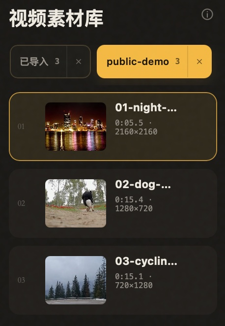
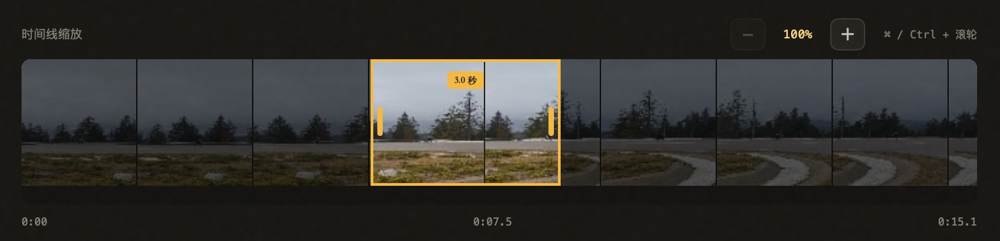
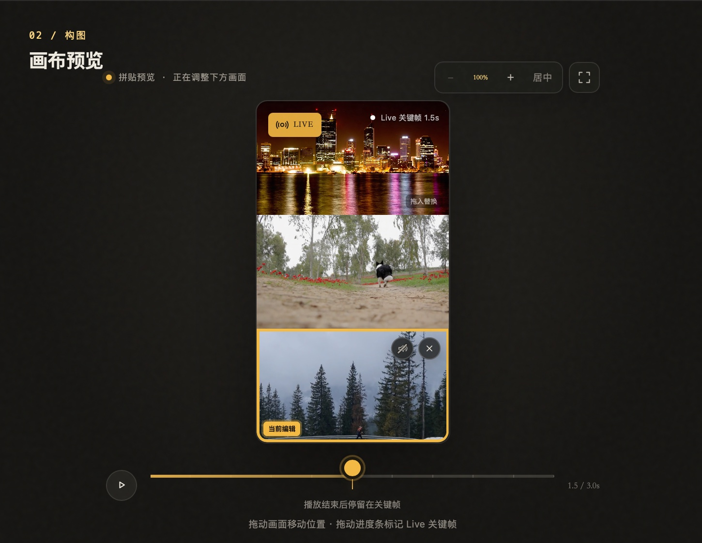

01 / LAYOUTS
每个画格，都是独立的三秒。
上下、左右、三拼和大小画面自由组合。每个格子都可以单独选段、缩放、移动和开关原声。

macOS 原生的视频转 iPhone Live Photo 工具。自由拼贴多个 3 秒瞬间，一键同步至 iPhone 照片，全程本地处理。
Apple 芯片 Mac · macOS 13+ · 已通过 Apple Developer ID 签名与官方公证
v__LIVES_VERSION__ · 照片授权修复与安装指引 · 更新说明

真实操作演示
这段演示直接录制自 Lives 开发版：夜景、狗狗和骑行分别占据一个画格，同步播放三秒，并在结束时柔和回到设定的 Live 关键帧。
从视频到 Live Photo
不需要学习复杂的剪辑软件。素材、画布和时间线始终在同一个窗口里。

导入多个视频或一个文件夹，从每段素材里截取连续 3 秒。

把素材拖进画格。一个视频也能重复使用，截取不同瞬间。

设定关键帧和声音，保存到“照片”，或导出 JPG + MOV 配对文件。
为实况拼贴而设计
上下、左右、三拼和大小画面自由组合。每个格子都可以单独选段、缩放、移动和开关原声。
预览播放结束后柔和渐变回关键帧，看到的就是最终 Live Photo 封面。

覆盖五种常用比例，并根据素材质量提供 1080P 或 720P 高清导出。

本地，就是边界
Lives 直接引用原文件进行处理，不上传，也不会修改源视频。只有在你选择“保存到照片”时，才会请求“仅添加照片”权限。
安装 Lives
当前版本只通过 Lives 官方 GitHub Releases 提供 Apple Silicon DMG。
从本站按钮直接下载与你设备匹配的 DMG 安装包。
打开 DMG，将 Lives 拖入“应用程序”文件夹。复制完成后，请从“应用程序”打开 Lives，不要直接在安装窗口内运行，以确保照片授权归属正确。
Lives 已通过 Apple 官方公证。首次打开时按 macOS 提示确认；选择“保存到照片”时，再允许 Lives 添加照片。
反馈与官方渠道
为了保护素材隐私，请不要在 Issue 中上传原视频、私人影像、个人信息或未脱敏日志。
常见问题
是。保存到 Apple“照片”时，Lives 会生成带有配对元数据的 JPEG 与 MOV，并作为一个 Live Photo 资产写入。通过 iCloud 照片同步到 iPhone 后，正常情况下会保留 Live 属性。
只有选择“保存到照片”时才需要。Lives 请求的是“仅添加照片”权限，不需要读取你的整个照片图库；你也可以改为导出到指定文件夹。
当前版本仅提供 Apple Silicon（M 系列芯片）原生优化构建。Intel 与 Universal 版本仍在评估中。
不会。Lives 使用原文件引用，不复制或修改视频。关闭 App 时只会清理生成过程中产生的临时文件。
支持。应用启动时优先通过 Lives 自有更新源检查正式版本，GitHub 作为备用；发现新版本后自动在后台下载并校验文件大小、SHA-256 和应用签名身份，标题栏胶囊会实时显示进度；下载完成后点击「重启」即可原子替换并进入新版本，全程无需手动下载 DMG。若安装包已校验并暂存，下次启动可继续安装。更新重启后，右上角反馈面板会显示当前版本，停留 4 秒后淡出；手动打开则保持显示。
唯一公开分发仓库是 github.com/ohmyangboy/lives，官网是 ohmyangboy.github.io/lives。请勿从网盘、群文件或第三方转载页安装。
Lives v__LIVES_VERSION__
Lives 是独立开发并开源的软件。如果它帮你留住了一个瞬间，欢迎微信扫码赞赏，支持独立开发者的持续投入与维护。